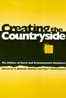

<body bgcolor="#FFFFFF" text="#000000" link="#0000FF" vlink="#CC0000" alink="#CC0000"><center><hr width="350" size="1" align="center" noshade>People active in regional environmental crises discuss the destruction, conservation, and creation of the countryside<hr width="350" size="1" align="center" noshade><p><a href="https://cdcshoppingcart.uchicago.edu/Cart/ChicagoBook.aspx?ISBN=9781566393591&&PRESS=temple" target="_top">Buy this book!</a> | <a href="https://cdcshoppingcart.uchicago.edu/Cart/Cart.aspx?PRESS=temple" target="_top">View Cart</a> | <a href="https://cdcshoppingcart.uchicago.edu/Cart/Cart.aspx?PRESS=temple" target="_top">Check Out</a></p><p></p></center><!--none//--><h1>Creating the Countryside</h1>
<H2>The Politics of Rural and Environmental Discourse</H2>
<h3>edited by E. Melanie DuPuis and Peter Vandergeest</h3>
<P>cloth 1-56639-359-0 $69.95, Jan 96, <FONT COLOR=#990033>Out of Stock Unavailable</FONT>
<br>paper 1-56639-360-4 $49.95, Jan 96, <FONT COLOR=#990033>Available</FONT>
<br>Electronic Book 1-43990-145-7 $49.95 <FONT COLOR=#990033>Out of Stock Unavailable</FONT>
<BR> 360 pp
6x9
7&nbsp;tables 4&nbsp;map(s) 3&nbsp;figures 6&nbsp;halftones
</P><p>What does it mean to save nature and rural life? Do people know what
they are trying to save and what they mean by "save"? As the answers to
these questions become more and more unclear, so, too do the concepts of
"environment," "wilderness," and "country."
<p>From the abuse of the Amazon rain forest to how Vermont has been
marketed as the ideal rural place, this collection looks at what the
countryside is, should be, or can be from the perspective of people who
are actively involved in such debates. Each contributor examines the
underlying tendencies&#150and subsequent policies&#150that separate country from city, developed land from wilderness, and human activity from natural processes. The editors argue in their introduction that these dualistic
categories limit our ability to think about environmental and rural problems and hamper our ability to formulate practical, realistic, and just solutions.
<p>This book's interpretive approach to the natural world explores why people make artificial distinctions between nature and culture, and how people can create new forms of sustainable development in terms of real problems and real places.
<BR>&nbsp;<h2>Excerpt</h2><P>Excerpt available at <a href="http://www.temple.edu/tempress">www.temple.edu/tempress</a></p>
<BR>&nbsp;<h2>Reviews</h2>
<p><i>"The most pervasive theme of this book may be the need to question both conventional wisdom and attractive concepts like Wilderness... in this strong, convincing book. "</i>
<br>&#151<b><i>Contemporary Sociology</i></b>
<BR>&nbsp;<h2>Contents</h2><P>
<p>List of Tables, Figures, and Illustrations
<br>Acknowledgments
<br>1. Introduction &#150 Peter Vandergeest and E. Melanie DuPuis
<p><b>Part I: Modernization and Marginalization</b>
<br>2. Stone Age New England: A Geology of Morals &#150 Michael M. Bell
<br>3. The Farm as Firm: Rhetoric and the Remanufacturing of Basque Agrarian Production &#150 Peter Leigh Taylor
<p><b>Part II: People In and Out of Nature</b>
<br>4. In the Name of Nature: Ecology, Marginality, and Rural Land Use Planning during the New Deal &#150 E. Melanie DuPuis
<br>5. "Reserving" Value: Conservation Ideology and State Protection of Resources &#150 Nancy Lee Peluso
<br>6. Native Amazonians and the Making of the Amazon Wilderness: From Discourse of Riches and Sloth to Underdevelopment &#150 Bill Fisher
<br>7. Reverence Is Not Enough: Ecological Marxism and Indian Adivasis &#150 Amita Baviskar
<br>8. Caribbean Environmentalism: An Ambiguous Discourse &#150 Barbara Deutsch Lynch
<p><b>Part III: Constructing Rurality</b>
<br>9. Consuming Images: Making and Marketing Vermont as Distinctive Rural Place &#150 C. Clare Hinrichs
<br>10. Real Villages: National Narratives of Development &#150 Peter Vandergeest Gendered Memory: Reconstructions of a Rural Place of Origin by Mexican Transnational Migrants &#150 Luin P. Goldring
<br>11. Gendered Memory: Constructions of Rurality Among Mexican Transnational Migrants &#150 Luin Goldring
<p>About the Contributors
<br>Index
</P><BR>&nbsp;<H2>About the Author(s)</H2>
<table><tr><td valign="top"><img src="/tempress/authors/1188_au1.gif" height="90" width="75"></td><td width="100%" valign="middle"><p><b>E. Melanie DuPuis</b> is Economic Development Policy Analyst covering environmental policy at the New York State Department of Economic Development.</P></td></tr></table><table><tr><td valign="top"><img src="/tempress/authors/1188_au2.gif" height="90" width="75"></td><td width="100%" valign="middle"><p><b>Peter Vandergeest</b> is Senior Fellow on the Faculty of
Environmental Studies at York University, and Assistant Professor of Pacific and Asian Studies at the University of Victoria.</P></td></tr></table>
<BR><H2>Subject Categories</H2>
<p><A HREF="/tempress/nature.html" TARGET="_top">Nature and the Environment</a>
<BR><A HREF="/tempress/history.html" TARGET="_top">History</a>
</p>
<BR><h2 class="inpageheading">In the series</H2>
<P><I><a href="http://www.temple.edu/tempress/conflicts.html" onMouseOver="window.status='Click for other books in this series!'; return true;" onMouseOut="window.status=''; return true;" target="_top">Conflicts in Urban and Regional Development</a></i>, edited by John R. Logan and Todd Swanstrom.
</p><p><i>Conflicts in Urban and Regional Development</i>, edited by John R. Logan and Todd Swanstrom, includes books on urban policy and issues of city and regional planning, accounts of the political economy of individual cities, and books that compare policies across cities and countries.</p>
<p align="center"><a href="https://cdcshoppingcart.uchicago.edu/Cart/ChicagoBook.aspx?ISBN=9781566393591&&PRESS=temple" target="_top">Buy this book!</a> | <a href="https://cdcshoppingcart.uchicago.edu/Cart/Cart.aspx?PRESS=temple" target="_top">View Cart</a> | <a href="https://cdcshoppingcart.uchicago.edu/Cart/Cart.aspx?PRESS=temple" target="_top">Check Out</a></p><p><font face="Arial" size="1"><a href="copyright.html" onMouseOver="window.status='Web Copyright Policy';return true;" onMouseOut="window.status=''" title="Web Copyright Policy">&copy;</a> 2015 <a href="http://www.temple.edu" target="new" onMouseOver="window.status='Link to Temple University home page';return true;" onMouseOut="window.status=''" title="Link to Temple University home page">Temple University</a>. All Rights Reserved. http://www.temple.edu/tempress/titles/1188_reg.html</font></p>